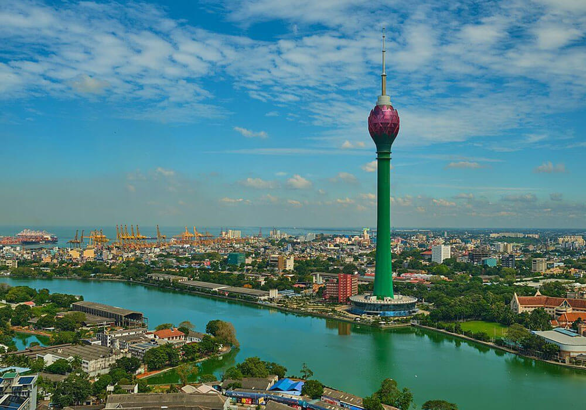
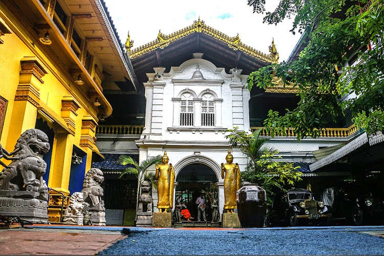
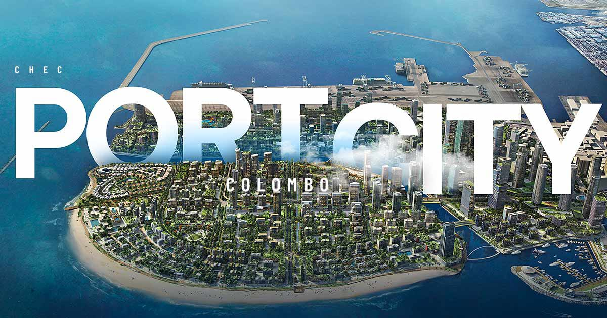

Lotus Tower
Standing at 351.5m, the Colombo Lotus Tower is the tallest structure in South Asia. This symbolic landmark offers observation decks, fine dining, and leisure facilities with unparalleled city views.
SEE THE VIEW
Standing at 351.5m, the Colombo Lotus Tower is the tallest structure in South Asia. This symbolic landmark offers observation decks, fine dining, and leisure facilities with unparalleled city views.
SEE THE VIEW
One of the oldest and most important Buddhist temples in Colombo. It's more than a place of worship; it's a seat of learning and a cultural center featuring an eclectic museum of treasures.
VISIT TEMPLEColombo's premier shopping, dining, and entertainment destination. This world-class mall brings global brands and elite experiences to the heart of the city's coastal stretch.
GO SHOPPING
A visionary city built on reclaimed land, aiming to become the financial hub of South Asia. It features artificial beaches, marinas, and futuristic urban living spaces.
EXPLORE PORT CITY